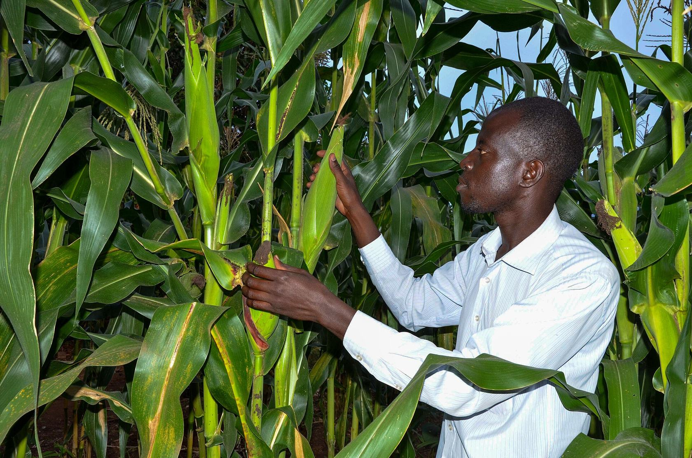
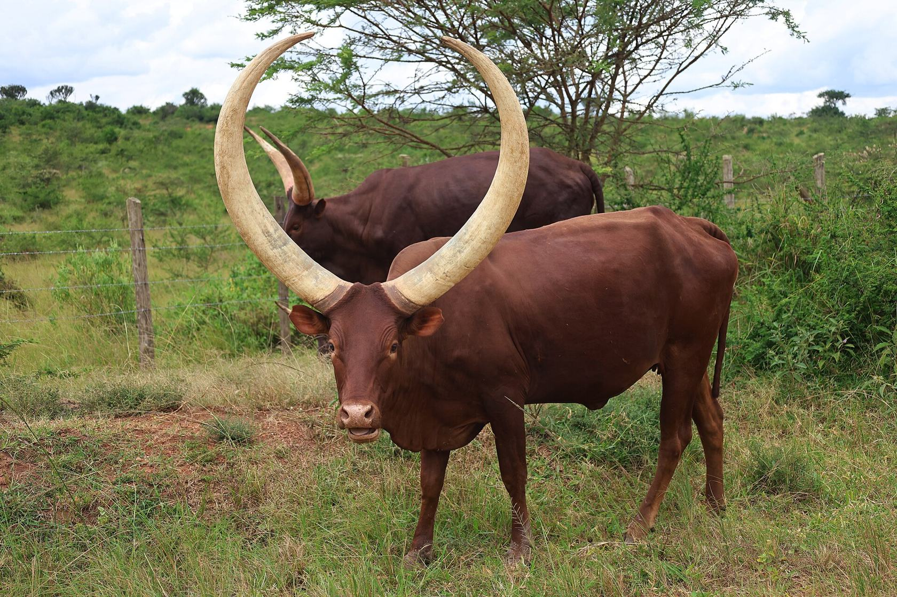
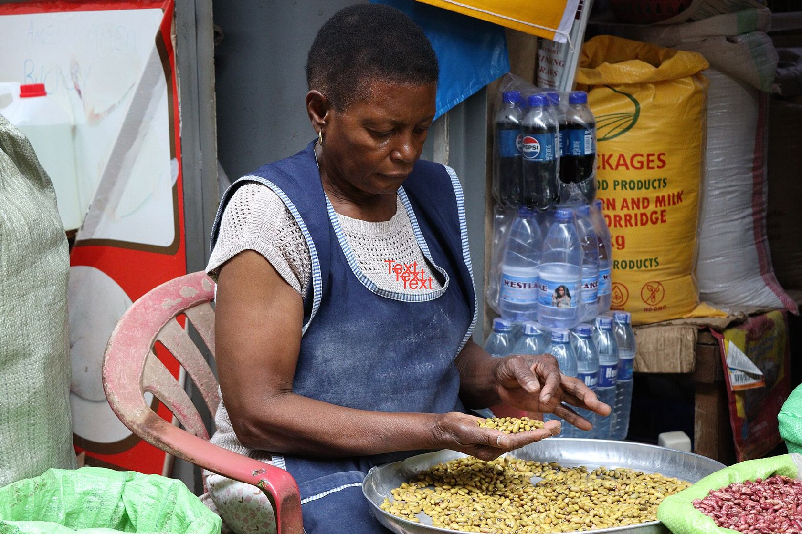
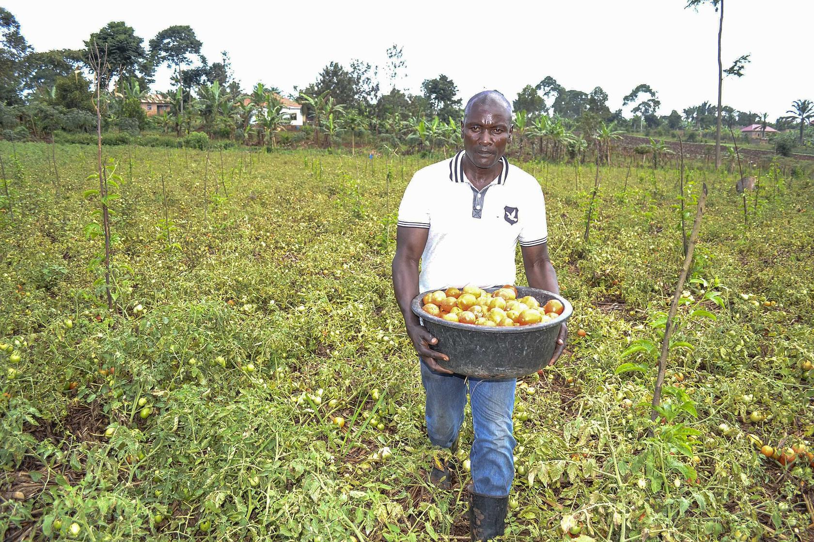

Savings And Credit For The People who grow Our Food.
Save a little, regularly, and borrow fairly for seed, livestock and your family. Built for farmers, livestock keepers and agricultural workers around Mbarara City.
- Registered & supervised
- Owned by members
- Loans follow the season
About us
Built by farmers, for farmers
Farming income does not arrive every month. It comes at harvest, and it has to last until the next one. Most banks want a land title, a salary slip and months of paperwork before they lend a shilling. Many smallholder farmers, livestock keepers and farm workers around Mbarara simply do not have these things.
UAWF SACCO was formed by farmers and agricultural workers who decided to solve this together. Every member saves a little, regularly. Those savings are pooled and lent back out as fair credit that suits farming, for seed and fertiliser today, for a dairy cow or a water tank tomorrow. The SACCO belongs to its members, and every member has a say in how it is run.
Read our full storyOur mission
To mobilise savings and provide affordable credit and training that suit farming and raise the incomes of farmers and agricultural workers.
Our vision
A thriving farming community in Western Uganda where every member is financially secure and able to invest in their land and family.
What we stand for
- Honesty
We keep clear, truthful records of every shilling saved and borrowed.
- One member, one vote
Whether you save a little or a lot, your voice counts the same at our meetings.
- Loans that follow the season
Repayment plans are built around planting and harvest, not a fixed office calendar.
- Transparency
Rates, fees and decisions are explained in plain language, in the open.
- Community care
We grow together, supporting members through good seasons and hard ones.
Services
Products built around farm life
Simple savings and credit that work with your harvest, your herd and your household, not against them.
Regular savings
Save weekly or monthly, any amount you can manage. Your money is safe, it grows, and it builds your record for future loans.
Farm input loans
Borrow for seed, fertiliser, feed or tools, and repay after you harvest or sell. Sized to fit your garden or plantation.
Development loans
Bigger goals need bigger support: a dairy cow, a water tank, a storage store, or a small agribusiness.
Emergency loans
Quick help for the moments you cannot plan for, like school fees due tomorrow or a sudden medical bill.
Group savings & loans
Farmer groups and workers’ associations can save and borrow together, with one shared, transparent account.
Training
Free sessions on financial literacy, record keeping, good farming practice and finding better markets for your produce.
Membership
How to join UAWF SACCO
Four simple steps and you are an owner of the SACCO.
Visit or contact the office
Come to our office in Mbarara City, or call us, to learn more and ask questions.
Fill the application form
Complete a short membership form with your basic details.
Pay entrance fee & buy shares
A single entrance fee and a small number of shares make you an owner of the SACCO.
Start saving
Begin your regular savings, weekly or monthly, whatever suits your income.
Who can join
- Smallholder farmers
- Livestock keepers
- Farm, plantation and dairy workers
- Agro processing workers
- Farmer groups and associations
- Any Ugandan aged 18 years and above
What to bring
- National ID
- Two passport size photos
- Next of kin details
- LC1 letter (if requested)
Plan ahead
Loan & savings calculator
See roughly what a loan could cost you, or how your savings could grow. All figures are in Ugandan Shillings (UGX).
These figures are examples only, to help you plan. Actual interest rates, fees and terms are set by the SACCO office and may change. Please visit us or call to confirm before you apply.
Registration & governance
Legally registered, and supervised
UAWF SACCO is registered under Section 6(1) of the Cooperative Societies Act, Cap 107, and is supervised by the Registrar of Cooperative Societies, Republic of Uganda.
Our current certificate is a probationary registration. This is the standard first stage for every newly registered cooperative society in Uganda. It is a two year period during which the Registrar confirms that the society is being run properly, before it can move on to full registration. It does not mean the SACCO is temporary; it means we are a genuine, newly formed society being given the normal start that every SACCO goes through.
We report to and can be inspected by the Registrar’s office, and we keep our members informed at every general meeting.
- Society name
- United Agricultural Workers & Farmers Savings & Credit Cooperative Limited
- Certificate No.
- P.298866
- Registered under
- Section 6(1), Cooperative Societies Act, Cap 107
- Status
- Probationary
- Date registered
- 22 September 2026
- Valid until
- 22 September 2028
- Issued by
- Registrar of Cooperative Societies, Robert Bariyo Barigye
Questions
Frequently asked questions
What is a SACCO?
A SACCO (Savings and Credit Cooperative) is an organisation owned by its members. Members save together, and those savings are lent back out to members as affordable loans. Any profit made benefits the members, not outside owners.
Do I need a land title to borrow?
No. Most of our loans do not require a land title. We look at your savings history, your group or guarantors, and your farming or business plan.
How much can I borrow?
How much you can borrow depends on your savings, your loan type and your ability to repay. Visit the office and our staff will guide you through the amount that fits your situation.
Can I repay after harvest?
Yes. Farm input loans are designed to be repaid after you harvest and sell your produce. We agree a repayment plan with you before you borrow.
Is my money safe?
Yes. UAWF SACCO is legally registered and supervised by the Registrar of Cooperative Societies. We keep proper records and report to our members at every general meeting.
Can people who are not farmers join?
Yes. While we are built around farming, any Ugandan aged 18 and above can join, including agro processing and dairy workers.
Get in touch
Visit, call or write to us
-
Office address
P.O. Box 1234, Mbarara City, Uganda
-
Phone
-
Email
-
Office hours
Mon to Fri: 8:30am to 5:00pm
Sat: 9:00am to 1:00pm